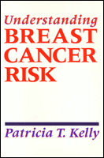

A guide to breast cancer risk analysis that is accessible to both health care providers and patients
A guide to breast cancer risk analysis that is accessible to both health care providers and patients


 A guide to breast cancer risk analysis that is accessible to both health care providers and patients
A guide to breast cancer risk analysis that is accessible to both health care providers and patients

|  |
Understanding Breast CancerPatricia T. Kellypaper EAN: 978-0-87722-813-4 (ISBN: 0-87722-813-2) |
"A unique melding of a critical review and analysis of the scientific evidence as well as practical guidelines for counseling patients where decisions between various therapeutic options have no mandated resolution."
—David L. Page, M.D., Director of Anatomic Pathology, Vanderbilt University School of Medicine
The threat of breast cancer concerns all women. Those who rely on media reports of various risk factors find they often contain information that is confusing, contradictory, incomplete, and not relevant to individual risk. Patricia T. Kelly, a medical geneticist who specializes in breast cancer risk assessment and counseling, has brought together materials from the fields of genetics, medicine, epidemiology, sociology, and counseling to provide a guide to breast cancer risk analysis that is accessible to both health care providers and patients. By addressing the social as well as the scientific aspects of breast cancer risk, this book helps health care professionals to better guide and inform their patients.
Understanding Breast Cancer presents the most up to date information about genetic and environmental factors that are either known or believed to influence the risk of breast cancer. Kelly discusses:
how to interpret and clarify study results and statistics
women’s personal fears and beliefs
the importance of understanding how each patient defines the disease
special concerns of those who have a family history of cancer, benign breast disease, or questions about hormones
the active role women should take in devising their own breast health program
useful strategies and methods of effective communication to help patients put their risk into perspective and achieve appropriate breast health care
This concise, clearly written book enables health care professionals to assess factors that contribute to breast cancer risk; to alleviate fears; to dispel myths about risk factors such as age, family history, diet, stress, and personality; and to help patients achieve an individual and comprehensive view of personal risk and appropriate breast health care.
"Concerns about breast cancer cause many women extreme anxiety about their symptoms and risk factors. Patricia Kelly’s book provides an approach to assessing risk and developing a breast health plan that is practical and acceptable to both the patient and her health care team."
—Sharon Green, Executive Director, Y-Me, National Organization for Breast Cancer Information and Support
List of Figures
List of Tables
Acknowledgments
Introduction: The Book, Its Audience and Purpose
1. The Patient's Perspective
Beliefs about Causes of Cancer •
Finding a Breast Lump •
Coping with Fear and Concern •
Risk Perceptions •
When a Mother Has Breast Cancer
2. Evaluation of Breast Cancer Risk
Risk Analysis Procedure •
Average Woman's Breast Cancer Risk •
Evaluating Studies
3. Benign Breast "Disease" and Non-Invasive "Cancers"
Benign Breast "Disease" •
Duct Carcinoma In Situ •
Lobular Carcinoma In Situ
4. Lifestyle and History
Diet •
Alcohol Consumption •
Cigarette Smoking •
Reproductive History •
Stress and Personality
5. Exogenous Hormones
Oral Contraceptives •
Replacement Hormones •
DES (Diethylstilbestrol)
6. Family History and Genetics
Breast Cancer Risk Analysis •
Simple or Mendelian Inheritance •
Interaction Between Genes and Environment •
Gene Probes or Restriction Fragment Length Polymorphisms (RFLP) •
Oncogenes
7. Helping Patients with a Breast Concern
Defining Prudent Breast Health Care •
Counseling and Health Education Techniques
Epilogue: Breast Cancer Risk Analysis Today and in the Future
Appendix A: Breast Cancer Risk Analysis Services
Appendix B: Patient Education Resources
Appendix C: Further Reading
References Cited
Index
Patricia T. Kelly, Ph.D. is a medical geneticist who has specialized in providing Cancer Risk Analysis in the San Francisco Bay Area for more than ten years. She is the director of the Cancer Risk Analysis service at Children’s Hospital of San Francisco and the author of Dealing with Dilemma: A Manual for Genetic Counselors.
Health and Health Policy
Sociology
Health, Society, and Policy, edited by Sheryl Ruzek and Irving Kenneth Zola.
No longer active.
Health, Society and Policy, edited by Sheryl Ruzek and Irving Kenneth Zola, takes a critical stance with regard to health policy and medical practice, ranging broadly in subject matter. Backlist titles include books on the legal and professional status of midwifery, the experience and regulation of kidney transplants, the evolution of federal law on architectural access, and a political/ethical argument for making the community responsible for universal access to health care.
© 2015 Temple University. All Rights Reserved. This page: http://www.temple.edu/tempress/titles/779_reg.html.